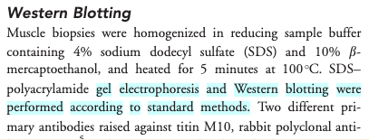

Identify the components of the Open Science movement, their goals,
and motivations.
Explain the key benefits of Open Science.
Recognize the barriers and challenges associated with adopting Open
Science practices.
Identify common issues that hinder data reusability.
Understand the FAIR principles.
(10 min teaching)
Science thrives on the exchange and development of ideas. The most
efficient scientific progress involves well-informed questions and
experiments, which necessitates the free exchange of data and
information.
All practices that make knowledge and data freely
available fall under the umbrella term of Open
Science/Open Research. It fosters greater
reproducibility, transparency, and accessibility in
science. As science becomes more open, the way we conduct and
communicate scientific findings continuously evolves.
What is Open Science
Open science is the movement to make scientific research (including
publications, data, physical samples, and software) and its
dissemination accessible to all levels of an inquiring
society, amateur or professional.
Open Science represents a new approach to the scientific process
based on collaborative work and utilizing
digital technologies and new collaborative tools to
disseminate knowledge.
Open science promotes transparent and accessible
knowledge that is shared and developed through collaborative
networks.
Characteristics:
Utilizing web-based tools to facilitate information exchange and
scientific collaboration
Transparency in experimental methodology, observations, and data
collection
Public availability and reusability of scientific data, methods, and
communications
Diverse outputs and target audiences
What is the Open Science movement?
The distribution of knowledge has always had room for improvement.
While the internet was initially developed for military purposes, it was
ultimately used for communication between scientists, providing a viable
path to transform how science is disseminated.
The momentum has grown alongside a shift in how science is
communicated, reflecting the needs of research communities. Open Science
addresses many of the pressing issues we face today, such as impact
factors, data reusability, the reproducibility crisis, and trust in the
public science sector.
Open Science is the movement to increase transparency and
reproducibility of research through the adoption of open best
practices.
Open Access: Research outputs are hosted in a
way that makes them accessible to everyone. Traditionally, Open Access
referred to journal articles, but now encompasses books, chapters, or
images.
Open Data: Data is freely and readily available
to access, reuse, and share. Smaller data sets were often included as
supplemental materials alongside articles in journals. However, they
should be hosted on dedicated platforms for more convenient and improved
access.
Open Software: Software with readily available
source code; others can freely use, modify, and share it. Examples
include the coding language and supporting software R and RStudio, as
well as image analysis software like Fiji/ImageJ.
Open Notebooks: Lab notebooks hosted online,
readily accessible to all. These are popular among some large funding
bodies and allow anyone to comment on any stage of the experimental
record.
Open Peer Review: A system where peer review
reports are published alongside the research work. This can include
reviewers’ reports, correspondence between involved parties, rebuttals,
editorial decisions, etc.
Citizen Science: Lay people contribute to
scientific research, most commonly in data collection or image analysis.
Platforms like https://www.zooniverse.org/
connect projects with interested laypeople who can actively participate
in research, helping to generate and/or process data that would be
unachievable by a single person.
Scientific social networks: Networks of
researchers, often meeting locally in teams but also connected online,
foster open discussions on scientific issues. Many researchers use
traditional social media platforms for this purpose, such as Twitter,
Instagram, various subreddits, discussion channels on Slack/Discord,
etc. There are also dedicated spaces like https://www.researchgate.net/.
Open Educational Resources: Educational
materials that are free for anyone to access and use for learning. These
can be anything from talks, instructional videos. This very course is a
perfect example of that!
Benefits of Open Science
Possible benefits and consequences for each Open Science module:
Open Access
Faster dissemination of knowledge
Levels the playing field for underfunded institutions that wouldn’t
otherwise be able to access research behind paywalls
Prevents articles from being paid for “three times” (first to
produce, second to publish, third to access) by institutions
Increases access to work by others, leading to greater exposure and
citations
Provides access to research for laypeople, thus increasing public
awareness of science
Open Data
Ensures data isn’t lost over time - promotes reusability
Accelerates scientific discovery
Provides value for money and reduces redundancy
Allows for statistical re-analysis of data to validate findings
Gives access to datasets not published in papers (e.g., negative
results, large screening data sets)
Provides a way to generate new hypotheses
Enables the combination of multiple data sources to address
questions, providing greater power than a single data source
Open Software
Excellent resource for learning programming skills
The ability to modify software fosters a supportive community of
users and rapid innovation
Saves time
Enables faster bug fixes
Encourages better error scrutiny
Using the same software/code allows for better reproducibility
between experiments
Requires funding to maintain and update software
Open Notebooks
Promotes 100% transparent science, allowing input from others at
early stages of experiments
Provides a source for learning about the scientific process
Allows access to experiments and data that otherwise might never get
published
Provides access to ‘negative’ results and failed experiments
Anyone, anywhere in the world, can access projects at any time,
enabling simultaneous input from many users
Offers the possibility of immediate feedback
Provides thorough evidence of the originality of ideas and
experiments, reducing the impact of “scooping”
Open Peer Review
Visibility leads to more constructive reviews
Mitigates against editorial conflicts of interest and/or biases
Mitigates against reviewer conflicts of interest and/or biases
Allows readers to learn and benefit from reviewers’ comments
Open Educational Materials
Fosters collaboration between educators and others
Clearly demonstrates how methods are taught (e.g., Carpentries
materials), which can be reproduced anywhere, anytime
Protects materials from becoming technologically obsolete
Authors who prepare or contribute materials can receive credit
(e.g., GitHub)
Enables the reuse of animations and excellent materials (why
reinvent the wheel?)
Motivation: Money (8 min teaching)
We must consider the ethical implications that accompany the research
and publication process. Charities and taxpayers fund research, and then
pay again to access the research they already funded.
From an economic viewpoint, scientific outputs generated by public
research are a public good that everyone should be able to use at no
cost.
Open Science aims to make research and research data accessible to
those who funded the research, such as charities and taxpayers.
The majority of large funding bodies in the UK and other countries
are now making Open Access publication a condition of funding. As a
result, Open Access is becoming the most widespread aspect of the Open
Science movement, adopted by the majority of researchers.
Personal motivators
Open Science offers advantages to many stakeholders in science
(including the research community, funding bodies, the public, and even
journals), leading to a push for widespread adoption of Open Science
practices.
Large UK funding bodies like The Wellcome Trust are strong supporters
of Open Science. The example of Open Access demonstrates that
enforcement by funders (the stick) can lead to widespread
adoption. But what about the personal motivators, the
carrots?
Exercise 1: Personal benefits of being “open”
(5 min)
Open Science practices offer a variety of advantages for researchers.
Read through the list below and consider which benefits resonate most
with you.
Select two the most important/attractive for you and mark them with
+1, select the two least important for you and mark them with 0
receive higher citations
complying with funders’ policies
get extra value from your work (e.g. collaborators, reuse by
modellers, ML specialists)
demonstrate research impact
save own time (reproducibility but also communication overhead)
become pioneers
distinguish yourself from the crowd
plan successful research proposals
gain valuable experience
form community
increased speed and/or ease of writing papers
speed up and help with peer review
build reputation and presence in the science community
evidence of your scientific rigour and work ethic
avoid embarrassment/disaster when you cannot reproduce your
results
Can you think of other benefits?
How personal benefits of Open Science compare to the benefits for the
(scientific) society?
(5 min teaching)
Open Science offers distinct advantages for both researchers and
society at large. The public benefits from immediate access to research
outputs, leading to faster scientific progress and innovation.
For researchers, the benefits take longer time, as open data and
publications need to time to lead to citations, collaborations, and
recognition within the scientific community
DORA: Declaration on Research Assessment
The San Francisco Declaration on Research Assessment (DORA)
emphasizes the limitations of using metrics like Journal Impact Factors
(JIF) to solely evaluate research. DORA advocates for assessing research
based on its inherent merit and contributions, promoting fairer and more
transparent evaluation practices. This shift acknowledges the importance
of research quality, openness, and its broader societal impact.
Funders Embrace DORA Principles
Research funders worldwide are increasingly endorsing DORA
principles. Leading institutions like Wellcome Trust and Cancer Research
UK incorporate DORA criteria into their funding applications. These
funders prioritize research outputs, mentorship contributions, and
public engagement plans, supporting research that generates valuable
knowledge, fosters collaboration, and benefits society.
Narrative CV as a DORA-Compliant Assessment Tool:
The Narrative CV aligns with DORA principles by focusing on key
dimensions that reflect a researcher’s contributions:
Generation of Knowledge: Acknowledging diverse outputs such as
datasets, patents, and software.
Development of Individuals and Collaborations: Highlighting
mentorship and collaborative endeavors that enrich the research
ecosystem.
Societal and Economic Impact: Demonstrating the societal and
economic impacts of research beyond academic circles.
Supporting the Research Community: Engaging in open science
practices and ensuring the accessibility of research outputs.
This framework prioritizes open science practices to maximize
research impact and visibility. Additionally, new metrics like retweets,
online views/downloads, discussions, and media coverage are considered,
providing a more comprehensive understanding of research impact in the
digital age.
Why Embrace Open Practices?
Open Science practices not only uphold ethical research conduct but
also enhance the credibility and reach of your work. The Narrative CV
and the adoption of DORA by leading funders exemplify the research
community’s shift towards a more transparent and equitable assessment
paradigm. Choosing open practices demonstrates not just integrity, but
also a recognition that authenticity and transparency are fundamental to
scientific progress. After all, timestamps and meticulous documentation
make faking open practices far more difficult than simply adhering to
them.
Barriers and risks of the Open Science movement:
Exercise 2: Why we are not doing Open Science
already (about 5 min)
Discuss the challenges and potential drawbacks associated with Open
Science practices.
Data Sensitivity: Anonymizing data from certain
sources, like administrative health records, can be complex and
time-consuming.
Intellectual Property (IP) Concerns: Researchers
might hesitate to share data if it could compromise potential patents or
other intellectual property.
Misuse of Data: Open data carries a risk of
misinterpretation or misuse, potentially leading to the spread of
misinformation (e.g., “fake news”).
Lack of Recognition for Negative Results:
Publishing negative or inconclusive findings can be less rewarding in
the current academic evaluation system.
Time and Cost: Making research outputs open and
user-friendly requires time and resources for proper data curation,
storage, and dissemination. This can be especially challenging for large
datasets.
Lack of Expertise: Researchers might not have the
necessary skills or training to effectively manage and share data
openly.
Fear of Criticism: The prospect of open peer review
or public scrutiny can be daunting, leading some researchers to shy away
from open science practices.
(8 min teaching)
There are valid reasons why some researchers hesitate to embrace Open
Science entirely.
Data sensitivity is a major concern. Data privacy
laws require careful handling of sensitive data, and anonymization can
be a complex process.
Anonymising data to desensitise it can help overcome this
barrier.
Intellectual property (IP) considerations are
another hurdle. Researchers may be hesitant to share data that could
compromise the patenting or commercialization of their discoveries.
However, careful data filtering can often address these concerns. For IP
protection it is the timeline of public disclosure that matters not fact
making them public.
Pre-prints, while valuable for rapid knowledge
dissemination, can be misused, particularly in fast-moving fields like
public health research. Unreviewed pre-prints have the potential to
mislead policymakers and the public if not interpreted with caution.
This can result in political and health decision making based on faulty
data, which is counter to societies’ best interest.
The fear of negative feedback can also be a barrier. However, open
peer review is a crucial part of the scientific process. Identifying and
correcting errors through open review strengthens research and fosters a
culture of transparency.
We should seek for our work to be scrutinized and errors to be
pointed out, and is the sign of a competent scientist. One should rather
have errors pointed out rather than risking that irreproducible data
might cause even more embarrassment and disaster.
Lack of Expertise: Researchers might not have the necessary skills or
training to effectively manage and share data openly.
One of the biggest barriers are the costs involved
in “being Open”. The time and financial investment
required for Open Science practices can be a significant barrier. Making
data readily accessible and usable takes effort, and data storage can be
expensive, especially for large datasets.
For example, microscopy datasets reach sizes in terabytes, making
such data accessible for 10 years involves serious financial
commitment.
Being FAIR
We’ve explored the advantages of Open Science practices for both the
scientific community and individual researchers. While Open Access has
made recent biomedical publications readily available, the same
accessibility often isn’t the case for the underlying data and
software.
What is Data?
The term “scientific data” encompasses a wider range than many might
initially think. It’s not limited to just numbers in spreadsheets! Data
can include:
Images: Microscopy images, but also gels, blots,
and other visual representations of findings.
Biological Information: Details about research
materials, like specific strains, cell lines, or patient
demographics.
Biological Models: Computational models used in
simulations or analyses.
Protocols: Step-by-step procedures for lab
experiments or data collection methods.
Code: Scripts, analysis routines, and custom
software used to generate results.
While there are specific best practices for sharing code, it’s still
considered a form of research data.
Let’s delve into the challenges associated with accessing and using
data from published biological research.
Exercise 3: Impossible protocol
(5 min breakout, plus 10 talking about both problems)
You need to do a western blot to identify Titin proteins, the largest
proteins in the body, with a molecular weight of 3,800 kDa. You found an
antibody sold by Sigma Aldrich that has been validated in western blots
and immunofluorescence. Sigma Aldrich lists the Yu et al., 2019 paper as
reference.
Find details of how to separate and transfer this large protein in
the reference paper.
Hint 1: Methods section has a Western blot analysis
subsection.
Hint 2: Follow the references.
Would you say that the methods was Findable? Accessible?
Reusable?
Ref 17 will lead you to this paper, which first of
all is not Open Access
Access the paper through your institutions (if you can) and find the
‘Western Blotting’ protocol on page 232 which will show the following
(Screenshot from the methods section from Evilä et al 2014):

Figure 1. Impossible Protocol
“Western blotting were performed according to standard methods.” -
with no further reference to these standard methods, describing these
methods, or supplementary material detailing these methods
This methodology is unfortunately a true dead end and we thus can’t
easily continue our experiments!
Impossible numbers
Ikram 2014 paper
contains data about various metabolites in different accessions
(genotypes) of Arabidopsis plant. You would like to calculate average
nitrogen content in plants grown under normal and nitrogen limited
conditions. Please calculate the average (over genotypes) nitrogen
content for the two experimental conditions.
Hint 1. Data are in Supplementary data
Hint 2. Search for nitrogen in paper text to identify the correct
data column.
Finding the right table and column containing the relevant data is
already problematic as the headers are obscured so they need to decoded
using manuscript
Data in pdf table so they cannot be readily used in
calculations
Depending on the software used to open (and the way the pdf was
created), the local machine international settings, copying the data
into Excel can bring unexpected results Data needs parsing after coping to Excel The same data copied to Excel with polish locale has been converted
to dates
In general pdf tables cannot be read programmatically from R or
Python.
The above examples illustrate the typical challenges in
accessing research data and software.
Firstly, data, protocols, and software often lack a distinct
identity, existing only as supplements to publications.
Second, accessibility and reusability are often compromised. For
instance, all details might be buried within a single supporting
information PDF file. These files often contain “printed” numerical
tables or even source code, both of which require manual re-entry for
use by others. Additionally, data may be shared in proprietary file
formats specific to a particular vendor, inaccessible without the
accompanying software. Finally, data files are often provided without
detailed descriptions beyond the full article text, hindering
reusability.
In our examples, the protocol was difficult to find
(the loops), access (paywall), and
reuse due to a lack of necessary details (dead-end).
Similarly, in the second example, the data were not
interoperable or reusable as they were
only available as a figure graph.
To address these problems, the FAIR principles were designed.
In our examples, the protocol was difficult to find
(the loops), difficult to access (pay wall), and not
reusable as it lacked the necessary details
(dead-end).
In the second example the data were not
interoperable and reusable as their
were only available as a figure graph.
To avoid such problems FAIR principles were designed.
In 2016, the FAIR Guiding Principles for scientific data management
and stewardship: https://www.nature.com/articles/sdata201618
were published in Scientific Data. The original guideline emphasized
“machine-actionability” - the ability of computer systems to
automatically process data. However, the focus has shifted towards
human-centric accessibility, acknowledging the limitations of
user-friendly tools for standardized metadata.
Findable: Data and metadata should be easily
discoverable by both humans and computers. Standardized and persistent
identifiers (PIDs) and machine-readable metadata are crucial for
automatic dataset and service discovery.
Accessible: (Meta)data should be retrievable using a
standardized and open communication protocol (including authentication
and authorization) based on their identifier. Even if the data itself
becomes unavailable, the metadata should remain accessible.
Interoperable: Data should be combinable and usable
with other data or tools. Open and interpretable data formats are
essential for various tools. Both data and metadata should utilize
vocabularies that follow FAIR principles to promote
interoperability.
Reusable: FAIR aims to optimize data reuse.
Well-described metadata and data facilitate replication and integration
in different contexts. Clear and accessible licenses should be provided
to govern (meta)data reuse.
FAIR in biological practice
Findable & Accessible
Deposit your data in a reputable external public repository.
These repositories provide persistent identifiers (PIDs) for easy
discovery, along with options for cataloging, advanced metadata
searching, and download statistics. Some repositories can even host
private data or offer embargo periods to delay full data access.
We will cover repositories in more details in a later
episode.
A persistent identifier (PID) is a long-lasting reference to a
digital resource. It typically consists of two parts:
A service that locates the resource over time, even if its location
changes.
A unique identifier that distinguishes the resource or concept from
others.
PIDs address the problem of accessing cited resources, particularly
in academic literature, where web addresses (links) often change over
time, leading to broken links.
Several services and technologies (schemes) provide PIDs for various
objects (digital, physical, or abstract). One of the most common is the
Digital Object Identifier (DOI) (https://www.doi.org/), recognizable by
the prefix “doi.org” in web links. For instance, this link (https://pubmed.ncbi.nlm.nih.gov/26978244/)
resolves to the paper that describes FAIR principles.
Public repositories often maintain stable web addresses for their
content, following the convention
http://repository.address/identifier. These are often
called permalinks. For well-established services, permalinks can be
considered PIDs.
For example, this link http://identifiers.org/SO:0000167
points to a page defining the promoter role and can be used to annotate
a DNA sequence performing such a role during transcription.
Interoperable
Use common and ideally free file formats (domain-specific options
might exist).
Always use .csv or .xls for numerical
data. Never share data tables as Word or PDF
documents.
Provide the underlying numerical data for all plots and graphs.
Convert proprietary binary formats to open formats. For example,
convert Snapgene to GenBank, or microscopy multistack images to
OME-TIFF.
Reusable
Describe your data well with comprehensive metadata.
Write a README file that describes your data.
Use descriptive column headers in your data tables.
Organize your data tables for analysis-friendliness (tidy data
principles).
Provide as much detail as possible through rich metadata.
For code, consider a permissive open-source license such as MIT, BSD, or Apache
Apache license
licenses.
Copyright and data
Software code (the text itself) automatically receives default
copyright protection, preventing others from copying or modifying it.
Only by adding an explicit license can you permit others to reuse
it.
Data, being factual, cannot be copyrighted. So why, do we
need a license?
While the data itself cannot be copyrighted, the way it’s presented
can be. The extent to which it’s protected ultimately needs to be
settled by a court.
“Good actors” will refrain from using your data to avoid legal risks.
However, “bad actors” might ignore the risk or have the resources to
fight legal battles.
Identify how each of F.A.I.R principles has been met. Hint: navigate to linked github record to easily access the README
file
F: The dataset is identified by a PID (doi). It can be found by its
ID. It human accessible description and keywords, both suitable for
discovery.
A: Data can be downloaded using standard browser.
I: Dataset entries are in common formats: csv, R, jpg
I: Dataset is linked to publication, github record and project
website
R: The record contains rich metadata in README file, including files
structure and the detailed tables formats.
R: Data are released under open Creative Commons Attribution
Licence
The FAIR acronym is sometimes accompanied with the following labels:
* Findable - Citable * Accessible - Trackable and countable *
Interoperable - Intelligible * Reusable - Reproducible
Findable - Citable: Findable data has a unique
identifier, ensuring proper attribution to the creators.
Accessible - Trackable and Countable: Accessible
data allows for monitoring usage statistics (e.g., downloads, user
locations) to understand its reach and impact.
Interoperable - Intelligible: Interoperable data is
understandable not only by current users but also by future users, even
if they lack access to the specific software used for analysis. This is
achieved through the use of standard formats and clear documentation.
The future you may not remember abreviations and ad-hoc conventions you
used before
Reusable - Reproducible: Well-documented data with
sufficient detail allows for reproducing the experiments, facilitating
verification and building upon existing knowledge. This saves time and
resources.
FAIR vs Open Science (2 min teaching)
FAIR is not synonymous with Open. FAIR guidelines
primarily require open access to the metadata record, describing the
data’s existence, a user-friendly PID for reference, and potentially
some restrictions on accessing the actual data files (e.g., login
required).
However, FAIR data is well-positioned for becoming Open data. Since
it’s already accessible online, uses interoperable formats, and comes
with thorough documentation, transitioning to fully open access becomes
a relatively simple step whenever the data owner decides it’s no longer
a risk.
Conversely, Open data lacking FAIR characteristics holds minimal
value. Poorly described data in non-standard formats remains unusable
even if it’s publicly available.
Open Science and FAIR Quiz (5 min)
Which of the following statements about the OS and FAIR are
true/false?
Open Science relies strongly on the Internet
Open Access eliminates publishing costs
Open Data facilitates re-use
Open Data can increases confidence in research findings
In Open Peer Review, readers vote on publication acceptance
Open Access permits the whole society to benefit from scientific
findings
Citizen Science engages the public in the research process
Release of public datasets is important for career progression
F in FAIR stands for free.
Only figures presenting results of statistical analysis need
underlying numerical data.
Sharing numerical data as a .pdf in Zenodo is FAIR.
Sharing numerical data as an Excel file via Github is not FAIR.
Group website is a good place to share your data.
Data should always be converted to Excel or .csv files in order to
be FAIR.
A DOI of a dataset helps in getting credit.
FAIR data are peer reviewed.
FAIR data accompany a publication.
Open Science relies strongly on the Internet T
Open Access eliminates publishing costs F
Open Data facilitates re-use T
Open Data increases confidence in research findings T
In Open Peer Review, readers vote on publication acceptance F
Open Access permits the whole society to benefit from scientific
findings T
Citizen Science engages the public in the research process T
Release of public datasets is important for career progression
T
F in FAIR stands for free. F
Only figures presenting results of statistical analysis need
underlying numerical data. F
Sharing numerical data as a .pdf in Zenodo is FAIR. F
Sharing numerical data as an Excel file via Github is not FAIR.
F
Group website is a good place to share your data. F
Data should always be converted to Excel or .csv files in order to
be FAIR. F
A DOI of a dataset helps in getting credit. T
FAIR data are peer reviewed. F
FAIR data accompany a publication. F
Where to next
SH
Further reading/links:- [Challenges &benefits of OS](https://journals.plos.org/plosbiology/article?id=10.1371/journal.pbio.3000246)- [Centre for Open Science](https://www.cos.io/)- [Ted talk supporting OS](https://www.youtube.com/watch?v=c-bemNZ-IqA)
Attribution
SH
Content of this episode was adapted from:* Wiki [Open Science](https://en.wikipedia.org/wiki/Open_science)* [European Open Science Cloud](https://www.eosc-hub.eu/open-science-info)* [Science is necessarily collaborative - The Biochemist article](https://portlandpress.com/biochemist/article/42/3/58/225220/Science-is-necessarily-collaborative).
Key Points
Open Science increases transparency in research
Publicly funded science should be publicly available
FAIR stands for Findable Accessible Interoperable Reusable
FAIR assures easy reuse of data underlying scientific findings


 After SangyaPundir
After SangyaPundir{kind=link}